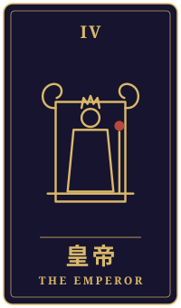

低い声
物語の手前に、ひとつの相談がありました。三枚のタロットをめぐるやりとりを、聞こえたままに書き留めています。
持ち込まれた相談
大学でロシア語を教えながら、細々と翻訳の仕事をしています。今朝、向こうで長く続いてきた新聞が編集部を閉じるというニュースを見て、しばらく台所で動けませんでした。留学していた頃、その新聞を辞書を引きながら読んだのが、私の言葉の勉強の始まりだったからです。この数年、受講する学生は減り、訳した本の出版も延期のままです。家族は「英語の仕事に軸を移したら」と言ってくれますし、それが正しいのも分かっています。でも、ここで手を離したら、あの頃の自分や、連絡の途絶えた友人まで置き去りにする気がして。この言葉を続けるべきか、別の道へ進むべきか、迷っています。
タロットの読み解き

過去
教皇・逆位置
逆位置の教皇は、昔から受け継がれてきた決まりごとや「こうあるべき」という型に、少しずつ距離を置きたくなる気持ちを表すカードです。あの新聞を辞書と首っ引きで読んだ日々は、型どおりの勉強というより、言葉そのものに心を動かされた体験だったのではないでしょうか。
ただ、その original な出会いが、いつの間にか「言葉を続けなければならない」という責任のような重さにも変わっていたのかもしれません。あの頃の気持ちに立ち返ることと、今の形を守ることは、同じではないという見方もできます。

現在
月・正位置
月の正位置は、はっきりしない不安や、言葉にしきれない思いが心の底で揺れている状態を示します。今朝、台所で動けなくなったのも、ニュースそのものより、あの頃の自分と今の自分が一度に目の前に現れたからかもしれませんね。
今のあなたは、続けるべきかどうかを頭で決めようとしながら、本当は何を大切にしたいのかがまだ霧の中にあるようにも見えます。答えを急がず、この曖昧さをそのまま抱えておく時間も、大切な一歩になりえます。

未来
皇帝・正位置
皇帝の正位置は、責任を引き受け、自分の足で立つ力を表すカードです。このカードは、どちらの道を選ぶにしても、最後に舵を握るのはあなた自身だと静かに伝えているように感じます。
たとえば、今の仕事を全部手放すか続けるかという二択ではなく、どこに軸を置き、どこで柔軟になるかを自分で決めていく。そんな形で安定を組み立てていく道も見えてきます。
最後に
今回の三枚は、過去の原点を大切に思う気持ち、今の揺れ、そしてそれを自分の責任として選び直す力を映しているように思えます。言葉を続けることも、別の道へ進むことも、どちらが正しいと占いで決めるものではありません。
大切なのは、あの頃の自分や友人を「置き去りにする」かどうかより、あなたが納得して前に進めるかどうかかもしれません。進路や仕事の大きな判断は、ご家族や信頼できる方、必要に応じてキャリアの専門家とも一緒に、ゆっくり話してみてくださいね。
帰り際の問い何を守るために、どの秩序を整えるのか。
読み解きは、タロット占い「月夜のアルカナ」が、この相談と引かれた三枚から返したものです。小説は同じ三枚を、別の角度から描いています。相談者は物語のための架空の人物です。相談文・読み解き・短編本文は、いずれも生成AIを使って制作しています。
物語に戻る